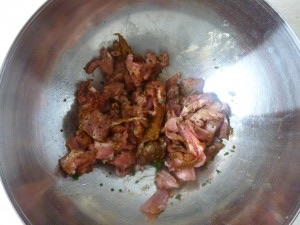
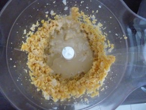
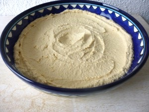
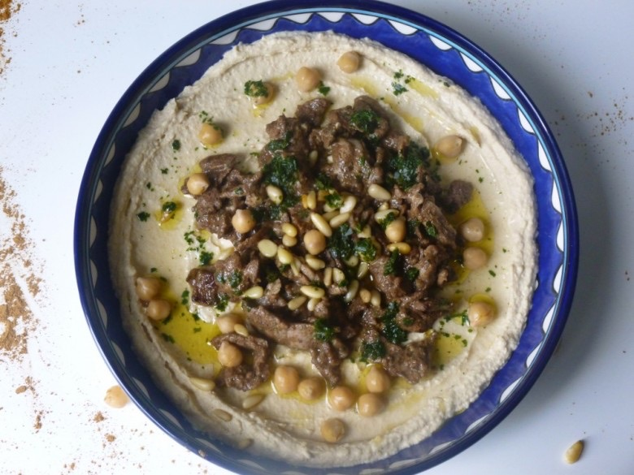

Houmous Kawarma sauce citron

Du « Houmous kawarma »: première recette du livre que je vous présente ce mois ci. (voir l’article ici )
Le houmous kawarma est un houmous « classique » agrémenté de morceaux d’agneaux frits.
En supprimant l’agneau et vous obtenez la recette du houmous de base que vous pouvez arroser tout simplement d’huile d’olive.
Le houmous que l’on peut aussi trouver écrit de la manière suivante: hommos, hoummous, houmos, hummus est une purée de pois chiches mélangée à du tahiné (crème de sésame) le tout étant arrosé d’huile d’olive.
C’est un plat parfait en entrée que l’on peut tout simplement manger avec du pain pita accompagné d’une petite salade.
Ingrédients
- pois chiches secs - 250g
- bicarbonate de soude - 1 càc
- tahiné - 270 g
- jus de citron - 4 càs
- ail - 4 gousses
- collier d'agneau - 300g
- poivre noir - 1/2 càc
- poivre blanc - 1/2 càc
- quatre épices - 1càc
- canelle - 1/2 càc
- noix de muscade - 1 pincée
- zaartar (ou origan) - 1 càc
- vinaigre blanc - 1 càs
- menthe fraîche - 1 càs
- persil plat - 1 càs
- sel - 1 càc
- beurre doux - 1 càs
- huile d'olive - 1 càc
- persil plat - 10 g
- piment vert - 1
- jus de citron - 4 càs
- vinaigre blanc - 2 càs
- ail - 2 gousses
- sel - 1/4 càc
- pois chiches
- pignons de pin
- persil plat
Instructions
- Laver les pois chiches et laisser tremper dans deux fois leur volume en eau pendant toute une nuit
- Égoutter les pois chiches
- Dans une poêle verser les pois chiches avec le bicarbonate de soude
- Laisser cuire 3/5 minutes sans cesser de remuer
- Ajouter 1.5 L d'eau et porter à ébullition
- Laisser cuire jusqu’à obtenir des pois chiches très tendre (compter 30min de cuisson)
- Égoutter et réserver.
- Couper l'agneau en fines lamelles
- A l'exception du beurre et de l'huile, mélanger dans un bol l'agneau et tous les autres ingrédients de la partie "Kawarma" (voir plus haut)
- Laisser mariner minimum 30min
- Mettre les pois chiches dans un mixeur ou écrasez les avec un écrase purée
- Ajouter le tahiné petit à petit suivi du jus de citron, de l'ail écrasé et du sel
- Rajouter de l'eau petit à petit pour arriver à la consistance souhaitée l'idéal étant d'obtenir une pâte bien crémeuse
- Réserver le houmous au frais
- Faites chauffer le beurre et l'huile dans une poêle
- Faire revenir l'agneau et veillant que la viande reste bien rosée au centre
- Préparer la sauce au citron : mélanger tous les ingrédients de la sauce au citron et mélanger
- Déposer le kawarma au centre du houmous et arroser de la sauce au citron.
- Pour parfaire la décoration ajouter quelques pois chiches, un peu de persil ciselé et quelques pignons de pins




Les tips de la communauté
Houmous apprécié avec commentaires brefs mais positifs. Lecteurs trouvent que c'est excellent et ça leur donne envie.